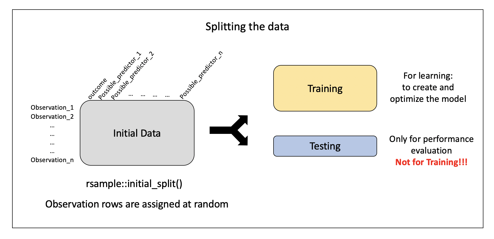
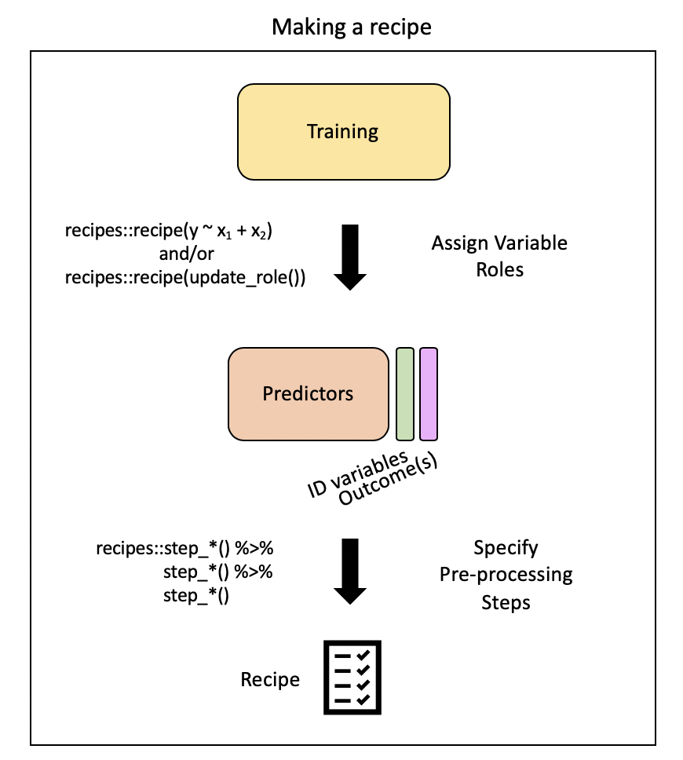
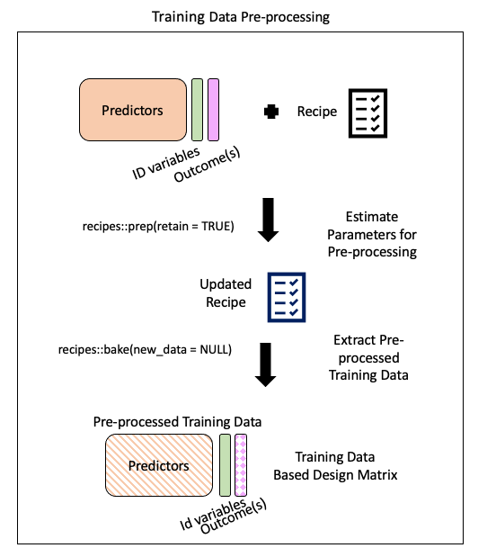
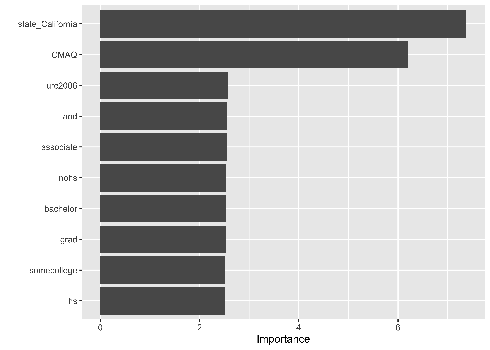
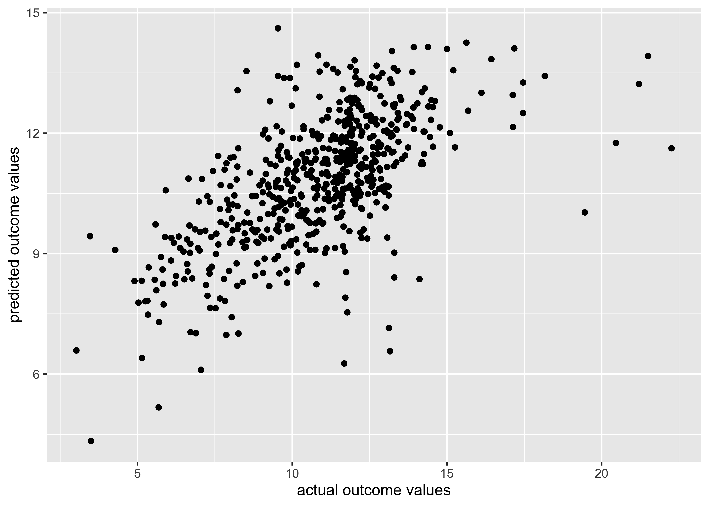
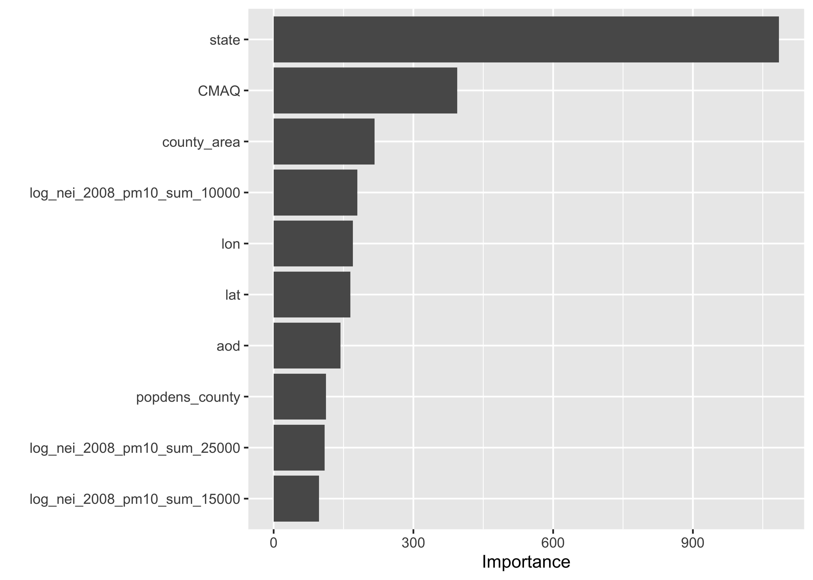
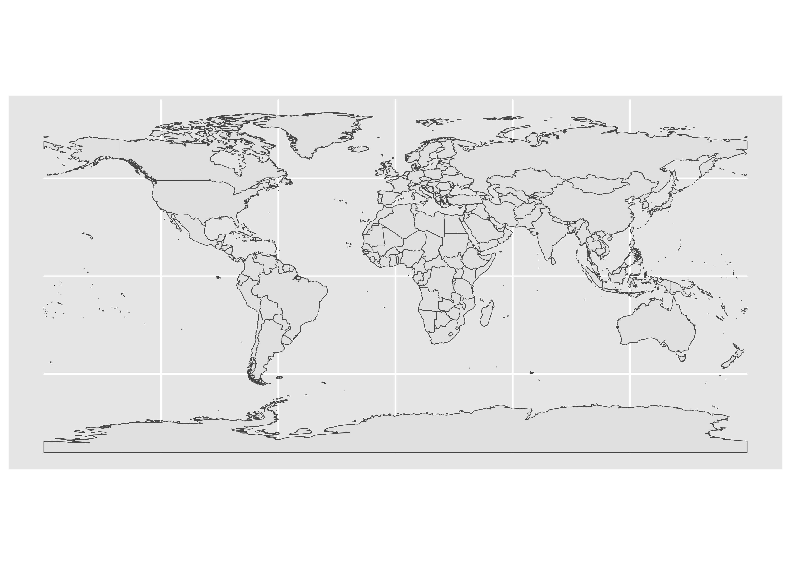
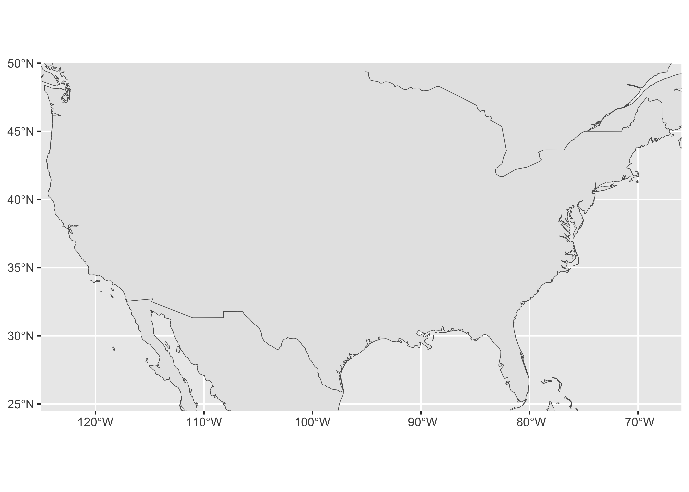
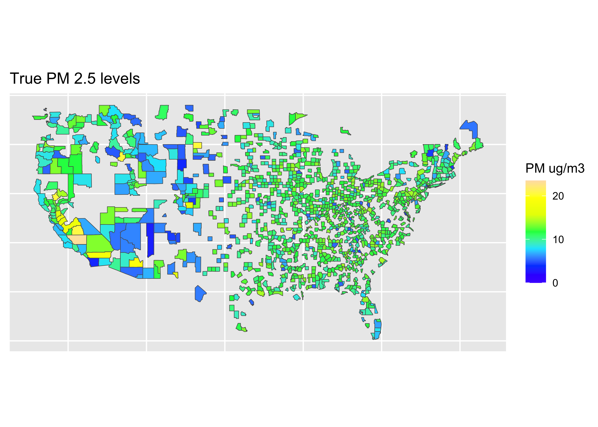
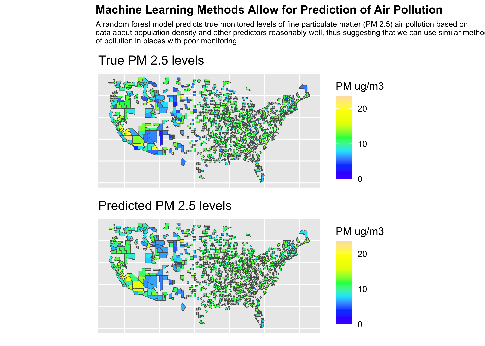

pm <- read_csv("OCS_data/data/raw/pm25_data.csv")
# Converting to factors
pm <- pm |>
mutate(across(c(id, fips, zcta), as.factor)) 13-cs02-analysis
CS02: Predicting Air Pollution (Analysis)
Q&A
Q: “First, in our CS02, is our prediction US annual average air pollution concentrations based on”“value”“? Is this going to be our outcome, as it was in class?
A:valuewill be our outcome. In this set of notes, we’ll discuss how to directly answer our question using machine learning.
Q: How do we decide whether to use main effects of interaction effects? Do we have to try both and compare r square values?
A: Well, we only include an interaction term if it actually makes sense for what we’re modelling, if the interaction term’s inclusion makes logical sense - meaning it could impact the relationship between the other predictor and outcome. Without that, it doesn’t make sense to include an interaction term, as the simplest model (no interaction) is preferred overall.
Q: San you redefine the differences between main vs. interaction effects? what are the pros and cons of each?
A: In a main effects model, we’re assuming the relationship between the predictor and outcome does not vary (is not impacted) by the second predictor (different y-intercepts; same slope/rate of change). In an interaction effects model we’re assuming the second predictor does impact the primary predictor and outcomes relationship. (different y-intercepts; different slopes). Con of interaction is that it adds an additional term into the model and is more difficult to interpret. So, you only want to go for an interaction effects model if it truly does a better job capturing the underlying relationships in the data.
Q: I wonder if we will go over logistic regressions, or k-clusters, or any other form of ML algorithms .
A: We’re not going to do logistic regression this quarter, but will introduce ML algorithms in this set of notes!
Course Announcements
- Lab07 due Thursday
- HW03 due Friday
- CS02 due Monday
- Final Project - rough draft due Monday
Notes:
- Lab06 scores/feedback posted
- CS01 scores/feedback posted
- Feedback as issue on repo
- If your score on CS02 is higher than CS01 that score will automatically be used for both CS01 and CS02
- Class Thursday will be time to work on CS02
Progress Check-in
❓ Where should you and your group be for CSO2 completion?
. . .
❓ Where should you be at right now for your final project? What should you have done for rough draft on Monday?
Question
With what accuracy can we predict US annual average air pollution concentrations?
Analysis
Building our tidymodels knowledge:

The Data
Data Splitting

. . .
Specify the split:
set.seed(1234)
pm_split <- rsample::initial_split(data = pm, prop = 2/3)
pm_split<Training/Testing/Total>
<584/292/876>set.seed<- ensures we all get the exact same random split- output displayed:
<training data sample number, testing data sample number, original sample number>
More on how people decide what proportions to use for data splitting here
Split the Data
train_pm <- rsample::training(pm_split)
test_pm <- rsample::testing(pm_split)
# Scroll through the output!
count(train_pm, state)# A tibble: 49 × 2
state n
<chr> <int>
1 Alabama 13
2 Arizona 12
3 Arkansas 8
4 California 55
5 Colorado 10
6 Connecticut 12
7 Delaware 3
8 District Of Columbia 2
9 Florida 22
10 Georgia 20
# ℹ 39 more rows❓ What do you observe about the output?
Pre-processing: recipe() + bake()
Need to:
- specify predictors vs. outcome
- scale variables
- remove redundant variables (feature engineering)
. . .
recipe provides a standardized format for a sequence of steps for pre-processing the data
. . .

Step 1: Specify variable roles
The simplest approach…
simple_rec <- train_pm |>
recipes::recipe(value ~ .)
simple_rec── Recipe ──────────────────────────────────────────────────────────────────────── Inputs Number of variables by roleoutcome: 1
predictor: 49. . .
…but we need to specify which column includes ID information
simple_rec <- train_pm |>
recipes::recipe(value ~ .) |>
recipes::update_role(id, new_role = "id variable")
simple_rec── Recipe ──────────────────────────────────────────────────────────────────────── Inputs Number of variables by roleoutcome: 1
predictor: 48
id variable: 1. . .
…and which are our predictors and which is our outcome
simple_rec <- recipe(train_pm) |>
update_role(everything(), new_role = "predictor") |>
update_role(value, new_role = "outcome") |>
update_role(id, new_role = "id variable")
simple_rec── Recipe ──────────────────────────────────────────────────────────────────────── Inputs Number of variables by roleoutcome: 1
predictor: 48
id variable: 1❓ Can someone summarize what this code is specifying?
. . .
Summarizing our recipe thus far:
summary(simple_rec)# A tibble: 50 × 4
variable type role source
<chr> <list> <chr> <chr>
1 id <chr [3]> id variable original
2 value <chr [2]> outcome original
3 fips <chr [3]> predictor original
4 lat <chr [2]> predictor original
5 lon <chr [2]> predictor original
6 state <chr [3]> predictor original
7 county <chr [3]> predictor original
8 city <chr [3]> predictor original
9 CMAQ <chr [2]> predictor original
10 zcta <chr [3]> predictor original
# ℹ 40 more rowsStep 2: Pre-process with step*()

Steps
There are step functions for a variety of purposes:
- Imputation – filling in missing values based on the existing data
- Transformation – changing all values of a variable in the same way, typically to make it more normal or easier to interpret
- Discretization – converting continuous values into discrete or nominal values - binning for example to reduce the number of possible levels (However this is generally not advisable!)
- Encoding / Creating Dummy Variables – creating a numeric code for categorical variables (More on one-hot and Dummy Variables encoding)
- Data type conversions – which means changing from integer to factor or numeric to date etc.
- Interaction term addition to the model – which means that we would be modeling for predictors that would influence the capacity of each other to predict the outcome
- Normalization – centering and scaling the data to a similar range of values
- Dimensionality Reduction/ Signal Extraction – reducing the space of features or predictors to a smaller set of variables that capture the variation or signal in the original variables (ex. Principal Component Analysis and Independent Component Analysis)
- Filtering – filtering options for removing variables (ex. remove variables that are highly correlated to others or remove variables with very little variance and therefore likely little predictive capacity)
- Row operations – performing functions on the values within the rows (ex. rearranging, filtering, imputing)
- Checking functions – Gut checks to look for missing values, to look at the variable classes etc.
This link and this link show the many options for recipe step functions.
Selecting Variables
There are several ways to select what variables to apply steps to:
- Using
tidyselectmethods:contains(),matches(),starts_with(),ends_with(),everything(),num_range()
- Using the type:
all_nominal(),all_numeric(),has_type() - Using the role:
all_predictors(),all_outcomes(),has_role() - Using the name - use the actual name of the variable/variables of interest
One-hot Encoding
One-hot encoding categorical variables:
simple_rec |>
step_dummy(state, county, city, zcta, one_hot = TRUE)── Recipe ──────────────────────────────────────────────────────────────────────── Inputs Number of variables by roleoutcome: 1
predictor: 48
id variable: 1── Operations • Dummy variables from: state, county, city, zcta❓ Can anyone explain what one-hot encoding does?
. . .
fipsincludes numeric code for state and county, so it’s another way to specify county- so, we’ll change
fips’ role - we get to decide what to call it (
"county id")
simple_rec |>
update_role("fips", new_role = "county id")── Recipe ──────────────────────────────────────────────────────────────────────── Inputs Number of variables by roleoutcome: 1
predictor: 47
county id: 1
id variable: 1. . .
Removing highly correlated variables:
simple_rec |>
step_corr(all_predictors(), - CMAQ, - aod)── Recipe ──────────────────────────────────────────────────────────────────────── Inputs Number of variables by roleoutcome: 1
predictor: 48
id variable: 1── Operations • Correlation filter on: all_predictors(), -CMAQ, -aod- specifying to KEEP
CMAQandaod
. . .
Removing variables with non-zero variance:
simple_rec |>
step_nzv(all_predictors(), - CMAQ, - aod)── Recipe ──────────────────────────────────────────────────────────────────────── Inputs Number of variables by roleoutcome: 1
predictor: 48
id variable: 1── Operations • Sparse, unbalanced variable filter on: all_predictors(), -CMAQ, -aodPutting our recipe together
simple_rec <- simple_rec |>
update_role("fips", new_role = "county id") |>
step_dummy(state, county, city, zcta, one_hot = TRUE) |>
step_corr(all_predictors(), - CMAQ, - aod)|>
step_nzv(all_predictors(), - CMAQ, - aod)
simple_rec── Recipe ──────────────────────────────────────────────────────────────────────── Inputs Number of variables by roleoutcome: 1
predictor: 47
county id: 1
id variable: 1── Operations • Dummy variables from: state, county, city, zcta• Correlation filter on: all_predictors(), -CMAQ, -aod• Sparse, unbalanced variable filter on: all_predictors(), -CMAQ, -aodNote: order of steps matters
Step 3: Running the pre-processing (prep)
There are some important arguments to know about:
training- you must supply a training data set to estimate parameters for pre-processing operations (recipe steps) - this may already be included in your recipe - as is the case for usfresh- iffresh=TRUE, will retrain and estimate parameters for any previous steps that were already prepped if you add more steps to the recipe (default isFALSE)verbose- ifverbose=TRUE, shows the progress as the steps are evaluated and the size of the pre-processed training set (default isFALSE)retain- ifretain=TRUE, then the pre-processed training set will be saved within the recipe (as template). This is good if you are likely to add more steps and do not want to rerun theprep()on the previous steps. However this can make the recipe size large. This is necessary if you want to actually look at the pre-processed data (default isTRUE)
prepped_rec <- prep(simple_rec,
verbose = TRUE,
retain = TRUE )oper 1 step dummy [training]
oper 2 step corr [training]
oper 3 step nzv [training]
The retained training set is ~ 0.26 Mb in memory.names(prepped_rec) [1] "var_info" "term_info" "steps" "template"
[5] "levels" "retained" "requirements" "tr_info"
[9] "orig_lvls" "last_term_info". . .
This output includes a lot of information:
- the
stepsthat were run
- the original variable info (
var_info)
- the updated variable info after pre-processing (
term_info) - the new
levelsof the variables - the original levels of the variables (
orig_lvls) - info about the training data set size and completeness (
tr_info)
Step 4: Extract pre-processed training data using bake()

bake(): apply our modeling steps (in this case just pre-processing on the training data) and see what it would do the data
. . .
baked_train <- bake(prepped_rec, new_data = NULL)
glimpse(baked_train)Rows: 584
Columns: 37
$ id <fct> 18003.0004, 55041.0007, 6065.1003, 39009.0…
$ value <dbl> 11.699065, 6.956780, 13.289744, 10.742000,…
$ fips <fct> 18003, 55041, 6065, 39009, 39061, 24510, 6…
$ lat <dbl> 41.09497, 45.56300, 33.94603, 39.44217, 39…
$ lon <dbl> -85.10182, -88.80880, -117.40063, -81.9088…
$ CMAQ <dbl> 10.383231, 3.411247, 11.404085, 7.971165, …
$ zcta_area <dbl> 16696709, 370280916, 41957182, 132383592, …
$ zcta_pop <dbl> 21306, 4141, 44001, 1115, 6566, 934, 41192…
$ imp_a500 <dbl> 28.9783737, 0.0000000, 30.3901384, 0.00000…
$ imp_a15000 <dbl> 13.0547959, 0.3676404, 23.7457506, 0.33079…
$ county_area <dbl> 1702419942, 2626421270, 18664696661, 13043…
$ county_pop <dbl> 355329, 9304, 2189641, 64757, 802374, 6209…
$ log_dist_to_prisec <dbl> 6.621891, 8.415468, 7.419762, 6.344681, 5.…
$ log_pri_length_5000 <dbl> 8.517193, 8.517193, 10.150514, 8.517193, 9…
$ log_pri_length_25000 <dbl> 12.77378, 10.16440, 13.14450, 10.12663, 13…
$ log_prisec_length_500 <dbl> 6.214608, 6.214608, 6.214608, 6.214608, 7.…
$ log_prisec_length_1000 <dbl> 9.240294, 7.600902, 7.600902, 8.793450, 8.…
$ log_prisec_length_5000 <dbl> 11.485093, 9.425537, 10.155961, 10.562382,…
$ log_prisec_length_10000 <dbl> 12.75582, 11.44833, 11.59563, 11.69093, 12…
$ log_nei_2008_pm10_sum_10000 <dbl> 4.91110140, 3.86982666, 4.03184660, 0.0000…
$ log_nei_2008_pm10_sum_15000 <dbl> 5.399131, 3.883689, 5.459257, 0.000000, 6.…
$ log_nei_2008_pm10_sum_25000 <dbl> 5.816047, 3.887264, 6.884537, 3.765635, 6.…
$ popdens_county <dbl> 208.719947, 3.542463, 117.314577, 49.64834…
$ popdens_zcta <dbl> 1276.059851, 11.183401, 1048.711994, 8.422…
$ nohs <dbl> 4.3, 5.1, 3.7, 4.8, 2.1, 0.0, 2.5, 7.7, 0.…
$ somehs <dbl> 6.7, 10.4, 5.9, 11.5, 10.5, 0.0, 4.3, 7.5,…
$ hs <dbl> 31.7, 40.3, 17.9, 47.3, 30.0, 0.0, 17.8, 2…
$ somecollege <dbl> 27.2, 24.1, 26.3, 20.0, 27.1, 0.0, 26.1, 2…
$ associate <dbl> 8.2, 7.4, 8.3, 3.1, 8.5, 71.4, 13.2, 7.6, …
$ bachelor <dbl> 15.0, 8.6, 20.2, 9.8, 14.2, 0.0, 23.4, 17.…
$ grad <dbl> 6.8, 4.2, 17.7, 3.5, 7.6, 28.6, 12.6, 12.3…
$ pov <dbl> 13.500, 18.900, 6.700, 14.400, 12.500, 3.5…
$ hs_orless <dbl> 42.7, 55.8, 27.5, 63.6, 42.6, 0.0, 24.6, 3…
$ urc2006 <dbl> 3, 6, 1, 5, 1, 1, 2, 1, 2, 6, 4, 4, 4, 4, …
$ aod <dbl> 54.11111, 31.16667, 83.12500, 33.36364, 50…
$ state_California <dbl> 0, 0, 1, 0, 0, 0, 1, 1, 0, 0, 0, 1, 0, 0, …
$ city_Not.in.a.city <dbl> 0, 1, 0, 1, 0, 0, 0, 0, 1, 0, 0, 0, 0, 0, …new_data = NULLspecifies that we’re not (yet) looking at our testing data- We only have 36 variables (33 predictors + 2 id variables + outcome)
- categorical variables (
state) are gone (one-hot encoding) state_Californiaremains - only state with nonzero variance (largest # of monitors)
Step 5: Extract pre-processed testing data using bake()
bake()takes a trained recipe and applies the operations to a data set to create a design matrix. For example: it applies the centering to new data sets using these means used to create the recipe. -tidymodelsdocumentation
. . .
Typically, you want to avoid using your testing data…but our data set is not that large and NA values in our testing dataset could cause issues later on.

. . .
baked_test_pm <- recipes::bake(prepped_rec, new_data = test_pm)
glimpse(baked_test_pm)Rows: 292
Columns: 37
$ id <fct> 1033.1002, 1055.001, 1069.0003, 1073.0023,…
$ value <dbl> 11.212174, 12.375394, 10.508850, 15.591017…
$ fips <fct> 1033, 1055, 1069, 1073, 1073, 1073, 1073, …
$ lat <dbl> 34.75878, 33.99375, 31.22636, 33.55306, 33…
$ lon <dbl> -87.65056, -85.99107, -85.39077, -86.81500…
$ CMAQ <dbl> 9.402679, 9.241744, 9.121892, 10.235612, 1…
$ zcta_area <dbl> 16716984, 154069359, 162685124, 26929603, …
$ zcta_pop <dbl> 9042, 20045, 30217, 9010, 16140, 3699, 137…
$ imp_a500 <dbl> 19.17301038, 16.49307958, 19.13927336, 41.…
$ imp_a15000 <dbl> 5.2472094, 5.1612102, 4.7401296, 17.452484…
$ county_area <dbl> 1534877333, 1385618994, 1501737720, 287819…
$ county_pop <dbl> 54428, 104430, 101547, 658466, 658466, 194…
$ log_dist_to_prisec <dbl> 5.760131, 5.261457, 7.112373, 6.600958, 6.…
$ log_pri_length_5000 <dbl> 8.517193, 9.066563, 8.517193, 11.156977, 1…
$ log_pri_length_25000 <dbl> 10.15769, 12.01356, 10.12663, 12.98762, 12…
$ log_prisec_length_500 <dbl> 8.611945, 8.740680, 6.214608, 6.214608, 6.…
$ log_prisec_length_1000 <dbl> 9.735569, 9.627898, 7.600902, 9.075921, 8.…
$ log_prisec_length_5000 <dbl> 11.770407, 11.728889, 12.298627, 12.281645…
$ log_prisec_length_10000 <dbl> 12.840663, 12.768279, 12.994141, 13.278416…
$ log_nei_2008_pm10_sum_10000 <dbl> 6.69187313, 4.43719884, 0.92888890, 8.2097…
$ log_nei_2008_pm10_sum_15000 <dbl> 6.70127741, 4.46267932, 3.67473904, 8.6488…
$ log_nei_2008_pm10_sum_25000 <dbl> 7.148858, 4.678311, 3.744629, 8.858019, 8.…
$ popdens_county <dbl> 35.460814, 75.367038, 67.619664, 228.77763…
$ popdens_zcta <dbl> 540.8870404, 130.1037411, 185.7391706, 334…
$ nohs <dbl> 7.3, 4.3, 5.8, 7.1, 2.7, 11.1, 9.7, 3.0, 8…
$ somehs <dbl> 15.8, 13.3, 11.6, 17.1, 6.6, 11.6, 21.6, 1…
$ hs <dbl> 30.6, 27.8, 29.8, 37.2, 30.7, 46.0, 39.3, …
$ somecollege <dbl> 20.9, 29.2, 21.4, 23.5, 25.7, 17.2, 21.6, …
$ associate <dbl> 7.6, 10.1, 7.9, 7.3, 8.0, 4.1, 5.2, 6.6, 4…
$ bachelor <dbl> 12.7, 10.0, 13.7, 5.9, 17.6, 7.1, 2.2, 7.8…
$ grad <dbl> 5.1, 5.4, 9.8, 2.0, 8.7, 2.9, 0.4, 4.2, 3.…
$ pov <dbl> 19.0, 8.8, 15.6, 25.5, 7.3, 8.1, 13.3, 23.…
$ hs_orless <dbl> 53.7, 45.4, 47.2, 61.4, 40.0, 68.7, 70.6, …
$ urc2006 <dbl> 4, 4, 4, 1, 1, 1, 2, 3, 3, 3, 2, 5, 4, 1, …
$ aod <dbl> 36.000000, 43.416667, 33.000000, 39.583333…
$ state_California <dbl> 0, 0, 0, 0, 0, 0, 0, 0, 0, 0, 0, 0, 0, 0, …
$ city_Not.in.a.city <dbl> NA, NA, NA, 0, 1, 1, 1, NA, NA, NA, 0, NA,…. . .
Hmm….lots of NAs now in city_Not.in.a.city
Likely b/c there are cities in our testing dataset that were not in our training dataset…
traincities <- train_pm |> distinct(city)
testcities <- test_pm |> distinct(city)
#get the number of cities that were different
dim(dplyr::setdiff(traincities, testcities))[1] 381 1#get the number of cities that overlapped
dim(dplyr::intersect(traincities, testcities))[1] 55 1Aside: return to wrangling
A quick return to wrangling…and re-splitting our data
pm <- pm |>
mutate(city = case_when(city == "Not in a city" ~ "Not in a city",
city != "Not in a city" ~ "In a city"))
set.seed(1234) # same seed as before
pm_split <- rsample::initial_split(data = pm, prop = 2/3)
pm_split<Training/Testing/Total>
<584/292/876> train_pm <- rsample::training(pm_split)
test_pm <- rsample::testing(pm_split). . .
And a recipe update…(putting it all together)
novel_rec <- recipe(train_pm) |>
update_role(everything(), new_role = "predictor") |>
update_role(value, new_role = "outcome") |>
update_role(id, new_role = "id variable") |>
update_role("fips", new_role = "county id") |>
step_dummy(state, county, city, zcta, one_hot = TRUE) |>
step_corr(all_numeric()) |>
step_nzv(all_numeric()) . . .
re-bake()
prepped_rec <- prep(novel_rec, verbose = TRUE, retain = TRUE)oper 1 step dummy [training]
oper 2 step corr [training]
oper 3 step nzv [training]
The retained training set is ~ 0.27 Mb in memory.baked_train <- bake(prepped_rec, new_data = NULL). . .
Looking at the output
glimpse(baked_train)Rows: 584
Columns: 38
$ id <fct> 18003.0004, 55041.0007, 6065.1003, 39009.0…
$ value <dbl> 11.699065, 6.956780, 13.289744, 10.742000,…
$ fips <fct> 18003, 55041, 6065, 39009, 39061, 24510, 6…
$ lat <dbl> 41.09497, 45.56300, 33.94603, 39.44217, 39…
$ lon <dbl> -85.10182, -88.80880, -117.40063, -81.9088…
$ CMAQ <dbl> 10.383231, 3.411247, 11.404085, 7.971165, …
$ zcta_area <dbl> 16696709, 370280916, 41957182, 132383592, …
$ zcta_pop <dbl> 21306, 4141, 44001, 1115, 6566, 934, 41192…
$ imp_a500 <dbl> 28.9783737, 0.0000000, 30.3901384, 0.00000…
$ imp_a15000 <dbl> 13.0547959, 0.3676404, 23.7457506, 0.33079…
$ county_area <dbl> 1702419942, 2626421270, 18664696661, 13043…
$ county_pop <dbl> 355329, 9304, 2189641, 64757, 802374, 6209…
$ log_dist_to_prisec <dbl> 6.621891, 8.415468, 7.419762, 6.344681, 5.…
$ log_pri_length_5000 <dbl> 8.517193, 8.517193, 10.150514, 8.517193, 9…
$ log_pri_length_25000 <dbl> 12.77378, 10.16440, 13.14450, 10.12663, 13…
$ log_prisec_length_500 <dbl> 6.214608, 6.214608, 6.214608, 6.214608, 7.…
$ log_prisec_length_1000 <dbl> 9.240294, 7.600902, 7.600902, 8.793450, 8.…
$ log_prisec_length_5000 <dbl> 11.485093, 9.425537, 10.155961, 10.562382,…
$ log_prisec_length_10000 <dbl> 12.75582, 11.44833, 11.59563, 11.69093, 12…
$ log_prisec_length_25000 <dbl> 13.98749, 13.15082, 13.44293, 13.58697, 14…
$ log_nei_2008_pm10_sum_10000 <dbl> 4.91110140, 3.86982666, 4.03184660, 0.0000…
$ log_nei_2008_pm10_sum_15000 <dbl> 5.399131, 3.883689, 5.459257, 0.000000, 6.…
$ log_nei_2008_pm10_sum_25000 <dbl> 5.816047, 3.887264, 6.884537, 3.765635, 6.…
$ popdens_county <dbl> 208.719947, 3.542463, 117.314577, 49.64834…
$ popdens_zcta <dbl> 1276.059851, 11.183401, 1048.711994, 8.422…
$ nohs <dbl> 4.3, 5.1, 3.7, 4.8, 2.1, 0.0, 2.5, 7.7, 0.…
$ somehs <dbl> 6.7, 10.4, 5.9, 11.5, 10.5, 0.0, 4.3, 7.5,…
$ hs <dbl> 31.7, 40.3, 17.9, 47.3, 30.0, 0.0, 17.8, 2…
$ somecollege <dbl> 27.2, 24.1, 26.3, 20.0, 27.1, 0.0, 26.1, 2…
$ associate <dbl> 8.2, 7.4, 8.3, 3.1, 8.5, 71.4, 13.2, 7.6, …
$ bachelor <dbl> 15.0, 8.6, 20.2, 9.8, 14.2, 0.0, 23.4, 17.…
$ grad <dbl> 6.8, 4.2, 17.7, 3.5, 7.6, 28.6, 12.6, 12.3…
$ pov <dbl> 13.500, 18.900, 6.700, 14.400, 12.500, 3.5…
$ hs_orless <dbl> 42.7, 55.8, 27.5, 63.6, 42.6, 0.0, 24.6, 3…
$ urc2006 <dbl> 3, 6, 1, 5, 1, 1, 2, 1, 2, 6, 4, 4, 4, 4, …
$ aod <dbl> 54.11111, 31.16667, 83.12500, 33.36364, 50…
$ state_California <dbl> 0, 0, 1, 0, 0, 0, 1, 1, 0, 0, 0, 1, 0, 0, …
$ city_Not.in.a.city <dbl> 0, 1, 0, 1, 0, 0, 0, 0, 1, 0, 0, 0, 0, 0, …. . .
Making sure the NA issue is taken are of:
baked_test_pm <- bake(prepped_rec, new_data = test_pm)
glimpse(baked_test_pm)Rows: 292
Columns: 38
$ id <fct> 1033.1002, 1055.001, 1069.0003, 1073.0023,…
$ value <dbl> 11.212174, 12.375394, 10.508850, 15.591017…
$ fips <fct> 1033, 1055, 1069, 1073, 1073, 1073, 1073, …
$ lat <dbl> 34.75878, 33.99375, 31.22636, 33.55306, 33…
$ lon <dbl> -87.65056, -85.99107, -85.39077, -86.81500…
$ CMAQ <dbl> 9.402679, 9.241744, 9.121892, 10.235612, 1…
$ zcta_area <dbl> 16716984, 154069359, 162685124, 26929603, …
$ zcta_pop <dbl> 9042, 20045, 30217, 9010, 16140, 3699, 137…
$ imp_a500 <dbl> 19.17301038, 16.49307958, 19.13927336, 41.…
$ imp_a15000 <dbl> 5.2472094, 5.1612102, 4.7401296, 17.452484…
$ county_area <dbl> 1534877333, 1385618994, 1501737720, 287819…
$ county_pop <dbl> 54428, 104430, 101547, 658466, 658466, 194…
$ log_dist_to_prisec <dbl> 5.760131, 5.261457, 7.112373, 6.600958, 6.…
$ log_pri_length_5000 <dbl> 8.517193, 9.066563, 8.517193, 11.156977, 1…
$ log_pri_length_25000 <dbl> 10.15769, 12.01356, 10.12663, 12.98762, 12…
$ log_prisec_length_500 <dbl> 8.611945, 8.740680, 6.214608, 6.214608, 6.…
$ log_prisec_length_1000 <dbl> 9.735569, 9.627898, 7.600902, 9.075921, 8.…
$ log_prisec_length_5000 <dbl> 11.770407, 11.728889, 12.298627, 12.281645…
$ log_prisec_length_10000 <dbl> 12.840663, 12.768279, 12.994141, 13.278416…
$ log_prisec_length_25000 <dbl> 13.79973, 13.70026, 13.85550, 14.45221, 13…
$ log_nei_2008_pm10_sum_10000 <dbl> 6.69187313, 4.43719884, 0.92888890, 8.2097…
$ log_nei_2008_pm10_sum_15000 <dbl> 6.70127741, 4.46267932, 3.67473904, 8.6488…
$ log_nei_2008_pm10_sum_25000 <dbl> 7.148858, 4.678311, 3.744629, 8.858019, 8.…
$ popdens_county <dbl> 35.460814, 75.367038, 67.619664, 228.77763…
$ popdens_zcta <dbl> 540.8870404, 130.1037411, 185.7391706, 334…
$ nohs <dbl> 7.3, 4.3, 5.8, 7.1, 2.7, 11.1, 9.7, 3.0, 8…
$ somehs <dbl> 15.8, 13.3, 11.6, 17.1, 6.6, 11.6, 21.6, 1…
$ hs <dbl> 30.6, 27.8, 29.8, 37.2, 30.7, 46.0, 39.3, …
$ somecollege <dbl> 20.9, 29.2, 21.4, 23.5, 25.7, 17.2, 21.6, …
$ associate <dbl> 7.6, 10.1, 7.9, 7.3, 8.0, 4.1, 5.2, 6.6, 4…
$ bachelor <dbl> 12.7, 10.0, 13.7, 5.9, 17.6, 7.1, 2.2, 7.8…
$ grad <dbl> 5.1, 5.4, 9.8, 2.0, 8.7, 2.9, 0.4, 4.2, 3.…
$ pov <dbl> 19.0, 8.8, 15.6, 25.5, 7.3, 8.1, 13.3, 23.…
$ hs_orless <dbl> 53.7, 45.4, 47.2, 61.4, 40.0, 68.7, 70.6, …
$ urc2006 <dbl> 4, 4, 4, 1, 1, 1, 2, 3, 3, 3, 2, 5, 4, 1, …
$ aod <dbl> 36.000000, 43.416667, 33.000000, 39.583333…
$ state_California <dbl> 0, 0, 0, 0, 0, 0, 0, 0, 0, 0, 0, 0, 0, 0, …
$ city_Not.in.a.city <dbl> 0, 0, 0, 0, 1, 1, 1, 0, 0, 0, 0, 0, 0, 0, …Specifying our model (parsnip)
There are four things we need to define about our model:
- The type of model (using specific functions in parsnip like
rand_forest(),logistic_reg()etc.)
- The package or engine that we will use to implement the type of model selected (using the
set_engine()function) - The mode of learning - classification or regression (using the
set_mode()function) - Any arguments necessary for the model/package selected (using the
set_args()function - for example themtry =argument for random forest which is the number of variables to be used as options for splitting at each tree node)
Step 1: Specify the model
- We’ll start with linear regression, but move to random forest
- See here for modeling options in
parsnip.
lm_PM_model <- parsnip::linear_reg() |>
parsnip::set_engine("lm") |>
set_mode("regression")
lm_PM_modelLinear Regression Model Specification (regression)
Computational engine: lm Step 2: Fit the model
workflowspackage allows us to keep track of both our pre-processing steps and our model specification- It also allows us to implement fancier optimizations in an automated way and it can also handle post-processing operations.
PM_wflow <- workflows::workflow() |>
workflows::add_recipe(novel_rec) |>
workflows::add_model(lm_PM_model)
PM_wflow══ Workflow ════════════════════════════════════════════════════════════════════
Preprocessor: Recipe
Model: linear_reg()
── Preprocessor ────────────────────────────────────────────────────────────────
3 Recipe Steps
• step_dummy()
• step_corr()
• step_nzv()
── Model ───────────────────────────────────────────────────────────────────────
Linear Regression Model Specification (regression)
Computational engine: lm ❓ Who can explain the difference between a recipe, baking, and a workflow?
Step 3: Prepare the recipe (estimate the parameters)
PM_wflow_fit <- parsnip::fit(PM_wflow, data = train_pm)
PM_wflow_fit══ Workflow [trained] ══════════════════════════════════════════════════════════
Preprocessor: Recipe
Model: linear_reg()
── Preprocessor ────────────────────────────────────────────────────────────────
3 Recipe Steps
• step_dummy()
• step_corr()
• step_nzv()
── Model ───────────────────────────────────────────────────────────────────────
Call:
stats::lm(formula = ..y ~ ., data = data)
Coefficients:
(Intercept) lat
2.936e+02 3.261e-02
lon CMAQ
1.586e-02 2.463e-01
zcta_area zcta_pop
-3.433e-10 1.013e-05
imp_a500 imp_a15000
5.064e-03 -3.066e-03
county_area county_pop
-2.324e-11 -7.576e-08
log_dist_to_prisec log_pri_length_5000
6.214e-02 -2.006e-01
log_pri_length_25000 log_prisec_length_500
-5.411e-02 2.204e-01
log_prisec_length_1000 log_prisec_length_5000
1.154e-01 2.374e-01
log_prisec_length_10000 log_prisec_length_25000
-3.436e-02 5.224e-01
log_nei_2008_pm10_sum_10000 log_nei_2008_pm10_sum_15000
1.829e-01 -2.355e-02
log_nei_2008_pm10_sum_25000 popdens_county
2.403e-02 2.203e-05
popdens_zcta nohs
-2.132e-06 -2.983e+00
somehs hs
-2.956e+00 -2.962e+00
somecollege associate
-2.967e+00 -2.999e+00
bachelor grad
-2.979e+00 -2.978e+00
pov hs_orless
1.859e-03 NA
urc2006 aod
2.577e-01 1.535e-02
state_California city_Not.in.a.city
3.114e+00 -4.250e-02 Step 4: Assess model fit
wflowoutput <- PM_wflow_fit |>
extract_fit_parsnip() |>
broom::tidy()
wflowoutput# A tibble: 36 × 5
term estimate std.error statistic p.value
<chr> <dbl> <dbl> <dbl> <dbl>
1 (Intercept) 2.94e+ 2 1.18e+ 2 2.49 0.0130
2 lat 3.26e- 2 2.28e- 2 1.43 0.153
3 lon 1.59e- 2 1.01e- 2 1.58 0.115
4 CMAQ 2.46e- 1 3.97e- 2 6.20 0.00000000108
5 zcta_area -3.43e-10 1.60e-10 -2.15 0.0320
6 zcta_pop 1.01e- 5 5.33e- 6 1.90 0.0578
7 imp_a500 5.06e- 3 7.42e- 3 0.683 0.495
8 imp_a15000 -3.07e- 3 1.16e- 2 -0.263 0.792
9 county_area -2.32e-11 1.97e-11 -1.18 0.238
10 county_pop -7.58e- 8 9.29e- 8 -0.815 0.415
# ℹ 26 more rows- We have fit our model on our training data
- We have created a model to predict values of air pollution based on the predictors that we have included
. . .
Understanding what variables are most important in our model…
PM_wflow_fit |>
extract_fit_parsnip() |>
vip::vip(num_features = 10)
. . .
A closer look at monitors in CA:
baked_train |>
mutate(state_California = as.factor(state_California)) |>
mutate(state_California = recode(state_California,
"0" = "Not California",
"1" = "California")) |>
ggplot(aes(x = state_California, y = value)) +
geom_boxplot() +
geom_jitter(width = .05) +
xlab("Location of Monitor")
. . .
Remember: machine learning (ML) as an optimization problem that tries to minimize the distance between our predicted outcome \(\hat{Y} = f(X)\) and actual outcome \(Y\) using our features (or predictor variables) \(X\) as input to a function \(f\) that we want to estimate.
\[d(Y - \hat{Y})\]
. . .
Let’s pull out our predicted outcome values \(\hat{Y} = f(X)\) from the models we fit (using different approaches).
wf_fit <- PM_wflow_fit |>
extract_fit_parsnip()
wf_fitted_values <-
broom::augment(wf_fit[["fit"]], data = baked_train) |>
select(value, .fitted:.std.resid)
head(wf_fitted_values)# A tibble: 6 × 6
value .fitted .hat .sigma .cooksd .std.resid
<dbl> <dbl> <dbl> <dbl> <dbl> <dbl>
1 11.7 12.2 0.0370 2.05 0.0000648 -0.243
2 6.96 9.14 0.0496 2.05 0.00179 -1.09
3 13.3 12.6 0.0484 2.05 0.000151 0.322
4 10.7 10.4 0.0502 2.05 0.0000504 0.183
5 14.5 11.9 0.0243 2.05 0.00113 1.26
6 12.2 9.52 0.476 2.04 0.0850 1.81 Visualizing Model Performance
wf_fitted_values |>
ggplot(aes(x = value, y = .fitted)) +
geom_point() +
xlab("actual outcome values") +
ylab("predicted outcome values")
❓ What do you notice about/learn from these results?
Quantifying Model Performance
\[RMSE = \sqrt{\frac{\sum_{i=1}^{n}{(\hat{y_t}- y_t)}^2}{n}}\]
. . .
Can use the yardstick package using the rmse()` function to calculate:
yardstick::metrics(wf_fitted_values,
truth = value, estimate = .fitted)# A tibble: 3 × 3
.metric .estimator .estimate
<chr> <chr> <dbl>
1 rmse standard 1.98
2 rsq standard 0.392
3 mae standard 1.47 - RMSE isn’t too bad
- \(R^2\) suggests model is only explaining 39% of the variance in the data
- The MAE value suggests that the average difference between the value predicted and the real value was 1.47 ug/m3. The range of the values was 3-22 in the training data, so this is a relatively small amount
Cross-Validation
Resampling + Re-partitioning:

. . .
Preparing the data for cross-validation:

Note: this is called v-fold or k-fold CV
Implementing in rsample()
set.seed(1234)
vfold_pm <- rsample::vfold_cv(data = train_pm, v = 4)
vfold_pm# 4-fold cross-validation
# A tibble: 4 × 2
splits id
<list> <chr>
1 <split [438/146]> Fold1
2 <split [438/146]> Fold2
3 <split [438/146]> Fold3
4 <split [438/146]> Fold4. . .
pull(vfold_pm, splits)[[1]]
<Analysis/Assess/Total>
<438/146/584>
[[2]]
<Analysis/Assess/Total>
<438/146/584>
[[3]]
<Analysis/Assess/Total>
<438/146/584>
[[4]]
<Analysis/Assess/Total>
<438/146/584>. . .
Visualizing this process:

Model Assessment on v-folds
Where this workflow thing really shines…
resample_fit <- tune::fit_resamples(PM_wflow, vfold_pm). . .
Gives us a sense of the RMSE across the four folds:
tune::show_best(resample_fit, metric = "rmse")# A tibble: 1 × 6
.metric .estimator mean n std_err .config
<chr> <chr> <dbl> <int> <dbl> <chr>
1 rmse standard 2.12 4 0.0444 Preprocessor1_Model1A different model?
Random Forest
Fitting a different model…is based on a decision tree:

[source]
But not just one tree…
But…in the case of random forest:
- multiple decision trees are created (hence: forest),
- each tree is built using a random subset of the training data (with replacement) (hence: random)
- helps to keep the algorithm from overfitting the data
- The mean of the predictions from each of the trees is used in the final output.
Visualizing a RF

Updating our recipe()
RF_rec <- recipe(train_pm) |>
update_role(everything(), new_role = "predictor")|>
update_role(value, new_role = "outcome")|>
update_role(id, new_role = "id variable") |>
update_role("fips", new_role = "county id") |>
step_novel("state") |>
step_string2factor("state", "county", "city") |>
step_rm("county") |>
step_rm("zcta") |>
step_corr(all_numeric())|>
step_nzv(all_numeric())- can use our categorical data as is (no dummy coding)
step_novel()necessary here for thestatevariable to get all cross validation folds to work, (b/c there will be different levels included in each fold test and training sets. The new levels for some of the test sets would otherwise result in an error.; “step_novel creates a specification of a recipe step that will assign a previously unseen factor level to a new value.”
Model Specification
Model parameters:
mtry- The number of predictor variables (or features) that will be randomly sampled at each split when creating the tree models. The default number for regression analyses is the number of predictors divided by 3.min_n- The minimum number of data points in a node that are required for the node to be split further.trees- the number of trees in the ensemble
. . .
# install.packages("randomForest")
RF_PM_model <- parsnip::rand_forest(mtry = 10, min_n = 3) |>
set_engine("randomForest") |>
set_mode("regression")
RF_PM_modelRandom Forest Model Specification (regression)
Main Arguments:
mtry = 10
min_n = 3
Computational engine: randomForest Workflow
RF_wflow <- workflows::workflow() |>
workflows::add_recipe(RF_rec) |>
workflows::add_model(RF_PM_model)
RF_wflow══ Workflow ════════════════════════════════════════════════════════════════════
Preprocessor: Recipe
Model: rand_forest()
── Preprocessor ────────────────────────────────────────────────────────────────
6 Recipe Steps
• step_novel()
• step_string2factor()
• step_rm()
• step_rm()
• step_corr()
• step_nzv()
── Model ───────────────────────────────────────────────────────────────────────
Random Forest Model Specification (regression)
Main Arguments:
mtry = 10
min_n = 3
Computational engine: randomForest Fit the Data
RF_wflow_fit <- parsnip::fit(RF_wflow, data = train_pm)
RF_wflow_fit══ Workflow [trained] ══════════════════════════════════════════════════════════
Preprocessor: Recipe
Model: rand_forest()
── Preprocessor ────────────────────────────────────────────────────────────────
6 Recipe Steps
• step_novel()
• step_string2factor()
• step_rm()
• step_rm()
• step_corr()
• step_nzv()
── Model ───────────────────────────────────────────────────────────────────────
Call:
randomForest(x = maybe_data_frame(x), y = y, mtry = min_cols(~10, x), nodesize = min_rows(~3, x))
Type of random forest: regression
Number of trees: 500
No. of variables tried at each split: 10
Mean of squared residuals: 2.633639
% Var explained: 59.29Assess Feature Importance
RF_wflow_fit |>
extract_fit_parsnip() |>
vip::vip(num_features = 10)
❓ What’s your interpretation of these results?
Assess Model Performance
set.seed(456)
resample_RF_fit <- tune::fit_resamples(RF_wflow, vfold_pm)
collect_metrics(resample_RF_fit)# A tibble: 2 × 6
.metric .estimator mean n std_err .config
<chr> <chr> <dbl> <int> <dbl> <chr>
1 rmse standard 1.67 4 0.101 Preprocessor1_Model1
2 rsq standard 0.591 4 0.0514 Preprocessor1_Model1. . .
For comparison:
collect_metrics(resample_fit)# A tibble: 2 × 6
.metric .estimator mean n std_err .config
<chr> <chr> <dbl> <int> <dbl> <chr>
1 rmse standard 2.12 4 0.0444 Preprocessor1_Model1
2 rsq standard 0.307 4 0.0263 Preprocessor1_Model1❓ Thoughts on which model better achieves our goal?
Model Tuning
Hyperparameters are often things that we need to specify about a model. Instead of arbitrarily specifying this, we can try to determine the best option for model performance by a process called tuning.
. . .
Rather than specifying values, we can use tune():
tune_RF_model <- rand_forest(mtry = tune(), min_n = tune()) |>
set_engine("randomForest") |>
set_mode("regression")
tune_RF_modelRandom Forest Model Specification (regression)
Main Arguments:
mtry = tune()
min_n = tune()
Computational engine: randomForest . . .
Create Workflow:
RF_tune_wflow <- workflows::workflow() |>
workflows::add_recipe(RF_rec) |>
workflows::add_model(tune_RF_model)
RF_tune_wflow══ Workflow ════════════════════════════════════════════════════════════════════
Preprocessor: Recipe
Model: rand_forest()
── Preprocessor ────────────────────────────────────────────────────────────────
6 Recipe Steps
• step_novel()
• step_string2factor()
• step_rm()
• step_rm()
• step_corr()
• step_nzv()
── Model ───────────────────────────────────────────────────────────────────────
Random Forest Model Specification (regression)
Main Arguments:
mtry = tune()
min_n = tune()
Computational engine: randomForest Detect how many cores you have access to:
n_cores <- parallel::detectCores()
n_cores[1] 10. . .
This code will take some time to run:
# install.packages("doParallel")
doParallel::registerDoParallel(cores = n_cores)
set.seed(123)
tune_RF_results <- tune_grid(object = RF_tune_wflow, resamples = vfold_pm, grid = 20)
tune_RF_results# Tuning results
# 4-fold cross-validation
# A tibble: 4 × 4
splits id .metrics .notes
<list> <chr> <list> <list>
1 <split [438/146]> Fold1 <tibble [40 × 6]> <tibble [0 × 3]>
2 <split [438/146]> Fold2 <tibble [40 × 6]> <tibble [0 × 3]>
3 <split [438/146]> Fold3 <tibble [40 × 6]> <tibble [1 × 3]>
4 <split [438/146]> Fold4 <tibble [40 × 6]> <tibble [0 × 3]>
There were issues with some computations:
- Warning(s) x1: 36 columns were requested but there were 35 predictors in the dat...
Run `show_notes(.Last.tune.result)` for more information.Check Metrics:
tune_RF_results |>
collect_metrics()# A tibble: 40 × 8
mtry min_n .metric .estimator mean n std_err .config
<int> <int> <chr> <chr> <dbl> <int> <dbl> <chr>
1 12 33 rmse standard 1.72 4 0.0866 Preprocessor1_Model01
2 12 33 rsq standard 0.562 4 0.0466 Preprocessor1_Model01
3 27 35 rmse standard 1.69 4 0.102 Preprocessor1_Model02
4 27 35 rsq standard 0.563 4 0.0511 Preprocessor1_Model02
5 22 40 rmse standard 1.71 4 0.106 Preprocessor1_Model03
6 22 40 rsq standard 0.556 4 0.0543 Preprocessor1_Model03
7 1 27 rmse standard 2.03 4 0.0501 Preprocessor1_Model04
8 1 27 rsq standard 0.440 4 0.0245 Preprocessor1_Model04
9 6 32 rmse standard 1.77 4 0.0756 Preprocessor1_Model05
10 6 32 rsq standard 0.552 4 0.0435 Preprocessor1_Model05
# ℹ 30 more rows. . .
show_best(tune_RF_results, metric = "rmse", n = 1)# A tibble: 1 × 8
mtry min_n .metric .estimator mean n std_err .config
<int> <int> <chr> <chr> <dbl> <int> <dbl> <chr>
1 32 11 rmse standard 1.65 4 0.113 Preprocessor1_Model10Final Model Evaluation
tuned_RF_values <- select_best(tune_RF_results, "rmse")
tuned_RF_values# A tibble: 1 × 3
mtry min_n .config
<int> <int> <chr>
1 32 11 Preprocessor1_Model10. . .
The testing data!
# specify best combination from tune in workflow
RF_tuned_wflow <- RF_tune_wflow |>
tune::finalize_workflow(tuned_RF_values)
# fit model with those parameters on train AND test
overallfit <- RF_wflow |>
tune::last_fit(pm_split)
collect_metrics(overallfit)# A tibble: 2 × 4
.metric .estimator .estimate .config
<chr> <chr> <dbl> <chr>
1 rmse standard 1.72 Preprocessor1_Model1
2 rsq standard 0.608 Preprocessor1_Model1Results are similar to what we saw in training (RMSE: 1.65)
. . .
Getting the predictions for the test data:
test_predictions <- collect_predictions(overallfit)Visualizing our results
A map of the US
Packages needed:
sf- the simple features package helps to convert geographical coordinates intogeometryvariables which are useful for making 2D plotsmaps- this package contains geographical outlines and plotting functions to create plots with mapsrnaturalearth- this allows for easy interaction with map data from Natural Earth which is a public domain map dataset
library(sf)
library(maps)
library(rnaturalearth)Outline of the US
world <- ne_countries(scale = "medium", returnclass = "sf")
glimpse(world)Rows: 241
Columns: 64
$ scalerank <int> 3, 1, 1, 1, 1, 3, 3, 1, 1, 1, 3, 1, 5, 3, 1, 1, 1, 1, 1, 1,…
$ featurecla <chr> "Admin-0 country", "Admin-0 country", "Admin-0 country", "A…
$ labelrank <dbl> 5, 3, 3, 6, 6, 6, 6, 4, 2, 6, 4, 4, 5, 6, 6, 2, 4, 5, 6, 2,…
$ sovereignt <chr> "Netherlands", "Afghanistan", "Angola", "United Kingdom", "…
$ sov_a3 <chr> "NL1", "AFG", "AGO", "GB1", "ALB", "FI1", "AND", "ARE", "AR…
$ adm0_dif <dbl> 1, 0, 0, 1, 0, 1, 0, 0, 0, 0, 1, 0, 1, 1, 0, 1, 0, 0, 0, 0,…
$ level <dbl> 2, 2, 2, 2, 2, 2, 2, 2, 2, 2, 2, 2, 2, 2, 2, 2, 2, 2, 2, 2,…
$ type <chr> "Country", "Sovereign country", "Sovereign country", "Depen…
$ admin <chr> "Aruba", "Afghanistan", "Angola", "Anguilla", "Albania", "A…
$ adm0_a3 <chr> "ABW", "AFG", "AGO", "AIA", "ALB", "ALD", "AND", "ARE", "AR…
$ geou_dif <dbl> 0, 0, 0, 0, 0, 0, 0, 0, 0, 0, 0, 0, 0, 0, 0, 0, 0, 0, 0, 0,…
$ geounit <chr> "Aruba", "Afghanistan", "Angola", "Anguilla", "Albania", "A…
$ gu_a3 <chr> "ABW", "AFG", "AGO", "AIA", "ALB", "ALD", "AND", "ARE", "AR…
$ su_dif <dbl> 0, 0, 0, 0, 0, 0, 0, 0, 0, 0, 0, 0, 0, 0, 0, 0, 0, 0, 0, 0,…
$ subunit <chr> "Aruba", "Afghanistan", "Angola", "Anguilla", "Albania", "A…
$ su_a3 <chr> "ABW", "AFG", "AGO", "AIA", "ALB", "ALD", "AND", "ARE", "AR…
$ brk_diff <dbl> 0, 0, 0, 0, 0, 0, 0, 0, 0, 0, 0, 0, 0, 0, 0, 0, 0, 0, 0, 0,…
$ name <chr> "Aruba", "Afghanistan", "Angola", "Anguilla", "Albania", "A…
$ name_long <chr> "Aruba", "Afghanistan", "Angola", "Anguilla", "Albania", "A…
$ brk_a3 <chr> "ABW", "AFG", "AGO", "AIA", "ALB", "ALD", "AND", "ARE", "AR…
$ brk_name <chr> "Aruba", "Afghanistan", "Angola", "Anguilla", "Albania", "A…
$ brk_group <chr> NA, NA, NA, NA, NA, NA, NA, NA, NA, NA, NA, NA, NA, NA, NA,…
$ abbrev <chr> "Aruba", "Afg.", "Ang.", "Ang.", "Alb.", "Aland", "And.", "…
$ postal <chr> "AW", "AF", "AO", "AI", "AL", "AI", "AND", "AE", "AR", "ARM…
$ formal_en <chr> "Aruba", "Islamic State of Afghanistan", "People's Republic…
$ formal_fr <chr> NA, NA, NA, NA, NA, NA, NA, NA, NA, NA, NA, NA, NA, NA, NA,…
$ note_adm0 <chr> "Neth.", NA, NA, "U.K.", NA, "Fin.", NA, NA, NA, NA, "U.S.A…
$ note_brk <chr> NA, NA, NA, NA, NA, NA, NA, NA, NA, NA, NA, "Multiple claim…
$ name_sort <chr> "Aruba", "Afghanistan", "Angola", "Anguilla", "Albania", "A…
$ name_alt <chr> NA, NA, NA, NA, NA, NA, NA, NA, NA, NA, NA, NA, NA, NA, NA,…
$ mapcolor7 <dbl> 4, 5, 3, 6, 1, 4, 1, 2, 3, 3, 4, 4, 1, 7, 2, 1, 3, 1, 2, 3,…
$ mapcolor8 <dbl> 2, 6, 2, 6, 4, 1, 4, 1, 1, 1, 5, 5, 2, 5, 2, 2, 1, 6, 2, 2,…
$ mapcolor9 <dbl> 2, 8, 6, 6, 1, 4, 1, 3, 3, 2, 1, 1, 2, 9, 5, 2, 3, 5, 5, 1,…
$ mapcolor13 <dbl> 9, 7, 1, 3, 6, 6, 8, 3, 13, 10, 1, NA, 7, 11, 5, 7, 4, 8, 8…
$ pop_est <dbl> 103065, 28400000, 12799293, 14436, 3639453, 27153, 83888, 4…
$ gdp_md_est <dbl> 2258.0, 22270.0, 110300.0, 108.9, 21810.0, 1563.0, 3660.0, …
$ pop_year <dbl> NA, NA, NA, NA, NA, NA, NA, NA, NA, NA, NA, NA, NA, NA, NA,…
$ lastcensus <dbl> 2010, 1979, 1970, NA, 2001, NA, 1989, 2010, 2010, 2001, 201…
$ gdp_year <dbl> NA, NA, NA, NA, NA, NA, NA, NA, NA, NA, NA, NA, NA, NA, NA,…
$ economy <chr> "6. Developing region", "7. Least developed region", "7. Le…
$ income_grp <chr> "2. High income: nonOECD", "5. Low income", "3. Upper middl…
$ wikipedia <dbl> NA, NA, NA, NA, NA, NA, NA, NA, NA, NA, NA, NA, NA, NA, NA,…
$ fips_10 <chr> NA, NA, NA, NA, NA, NA, NA, NA, NA, NA, NA, NA, NA, NA, NA,…
$ iso_a2 <chr> "AW", "AF", "AO", "AI", "AL", "AX", "AD", "AE", "AR", "AM",…
$ iso_a3 <chr> "ABW", "AFG", "AGO", "AIA", "ALB", "ALA", "AND", "ARE", "AR…
$ iso_n3 <chr> "533", "004", "024", "660", "008", "248", "020", "784", "03…
$ un_a3 <chr> "533", "004", "024", "660", "008", "248", "020", "784", "03…
$ wb_a2 <chr> "AW", "AF", "AO", NA, "AL", NA, "AD", "AE", "AR", "AM", "AS…
$ wb_a3 <chr> "ABW", "AFG", "AGO", NA, "ALB", NA, "ADO", "ARE", "ARG", "A…
$ woe_id <dbl> NA, NA, NA, NA, NA, NA, NA, NA, NA, NA, NA, NA, NA, NA, NA,…
$ adm0_a3_is <chr> "ABW", "AFG", "AGO", "AIA", "ALB", "ALA", "AND", "ARE", "AR…
$ adm0_a3_us <chr> "ABW", "AFG", "AGO", "AIA", "ALB", "ALD", "AND", "ARE", "AR…
$ adm0_a3_un <dbl> NA, NA, NA, NA, NA, NA, NA, NA, NA, NA, NA, NA, NA, NA, NA,…
$ adm0_a3_wb <dbl> NA, NA, NA, NA, NA, NA, NA, NA, NA, NA, NA, NA, NA, NA, NA,…
$ continent <chr> "North America", "Asia", "Africa", "North America", "Europe…
$ region_un <chr> "Americas", "Asia", "Africa", "Americas", "Europe", "Europe…
$ subregion <chr> "Caribbean", "Southern Asia", "Middle Africa", "Caribbean",…
$ region_wb <chr> "Latin America & Caribbean", "South Asia", "Sub-Saharan Afr…
$ name_len <dbl> 5, 11, 6, 8, 7, 5, 7, 20, 9, 7, 14, 10, 23, 22, 17, 9, 7, 1…
$ long_len <dbl> 5, 11, 6, 8, 7, 13, 7, 20, 9, 7, 14, 10, 27, 35, 19, 9, 7, …
$ abbrev_len <dbl> 5, 4, 4, 4, 4, 5, 4, 6, 4, 4, 9, 4, 7, 10, 6, 4, 5, 4, 4, 5…
$ tiny <dbl> 4, NA, NA, NA, NA, 5, 5, NA, NA, NA, 3, NA, NA, 2, 4, NA, N…
$ homepart <dbl> NA, 1, 1, NA, 1, NA, 1, 1, 1, 1, NA, 1, NA, NA, 1, 1, 1, 1,…
$ geometry <MULTIPOLYGON [°]> MULTIPOLYGON (((-69.89912 1..., MULTIPOLYGON (…World map:
ggplot(data = world) +
geom_sf() 
Just the US
According to this link, these are the latitude and longitude bounds of the continental US:
- top = 49.3457868 # north lat
- left = -124.7844079 # west long
- right = -66.9513812 # east long
- bottom = 24.7433195 # south lat
Just the US
ggplot(data = world) +
geom_sf() +
coord_sf(xlim = c(-125, -66), ylim = c(24.5, 50),
expand = FALSE)
Monitor Data
Adding in our monitors…
ggplot(data = world) +
geom_sf() +
coord_sf(xlim = c(-125, -66), ylim = c(24.5, 50),
expand = FALSE)+
geom_point(data = pm, aes(x = lon, y = lat), size = 2,
shape = 23, fill = "darkred")
County Lines
Adding in county lines
counties <- sf::st_as_sf(maps::map("county", plot = FALSE,
fill = TRUE))
countiesSimple feature collection with 3076 features and 1 field
Geometry type: MULTIPOLYGON
Dimension: XY
Bounding box: xmin: -124.6813 ymin: 25.12993 xmax: -67.00742 ymax: 49.38323
Geodetic CRS: +proj=longlat +ellps=clrk66 +no_defs +type=crs
First 10 features:
ID geom
alabama,autauga alabama,autauga MULTIPOLYGON (((-86.50517 3...
alabama,baldwin alabama,baldwin MULTIPOLYGON (((-87.93757 3...
alabama,barbour alabama,barbour MULTIPOLYGON (((-85.42801 3...
alabama,bibb alabama,bibb MULTIPOLYGON (((-87.02083 3...
alabama,blount alabama,blount MULTIPOLYGON (((-86.9578 33...
alabama,bullock alabama,bullock MULTIPOLYGON (((-85.66866 3...
alabama,butler alabama,butler MULTIPOLYGON (((-86.8604 31...
alabama,calhoun alabama,calhoun MULTIPOLYGON (((-85.74313 3...
alabama,chambers alabama,chambers MULTIPOLYGON (((-85.59416 3...
alabama,cherokee alabama,cherokee MULTIPOLYGON (((-85.46812 3...The Map
monitors <- ggplot(data = world) +
geom_sf(data = counties, fill = NA, color = gray(.5))+
coord_sf(xlim = c(-125, -66), ylim = c(24.5, 50),
expand = FALSE) +
geom_point(data = pm, aes(x = lon, y = lat), size = 2,
shape = 23, fill = "darkred") +
ggtitle("Monitor Locations") +
theme(axis.title.x=element_blank(),
axis.text.x = element_blank(),
axis.ticks.x = element_blank(),
axis.title.y = element_blank(),
axis.text.y = element_blank(),
axis.ticks.y = element_blank())
Counties
Wrangle counties:
- separate county and state into separate columns
- make title case
- combine with PM data
counties <- counties |>
tidyr::separate(ID, into = c("state", "county"), sep = ",") |>
dplyr::mutate(county = stringr::str_to_title(county))
map_data <- dplyr::inner_join(counties, pm, by = "county")Map: Truth
truth <- ggplot(data = world) +
coord_sf(xlim = c(-125,-66),
ylim = c(24.5, 50),
expand = FALSE) +
geom_sf(data = map_data, aes(fill = value)) +
scale_fill_gradientn(colours = topo.colors(7),
na.value = "transparent",
breaks = c(0, 10, 20),
labels = c(0, 10, 20),
limits = c(0, 23.5),
name = "PM ug/m3") +
ggtitle("True PM 2.5 levels") +
theme(axis.title.x = element_blank(),
axis.text.x = element_blank(),
axis.ticks.x = element_blank(),
axis.title.y = element_blank(),
axis.text.y = element_blank(),
axis.ticks.y = element_blank())Coordinate system already present. Adding new coordinate system, which will
replace the existing one.
Map: Predictions
# fit data
RF_final_train_fit <- parsnip::fit(RF_tuned_wflow, data = train_pm)
RF_final_test_fit <- parsnip::fit(RF_tuned_wflow, data = test_pm)
# get predictions on training data
values_pred_train <- predict(RF_final_train_fit, train_pm) |>
bind_cols(train_pm |> select(value, fips, county, id))
# get predictions on testing data
values_pred_test <- predict(RF_final_test_fit, test_pm) |>
bind_cols(test_pm |> select(value, fips, county, id))
values_pred_test# A tibble: 292 × 5
.pred value fips county id
<dbl> <dbl> <fct> <chr> <fct>
1 11.6 11.2 1033 Colbert 1033.1002
2 11.9 12.4 1055 Etowah 1055.001
3 11.1 10.5 1069 Houston 1069.0003
4 13.9 15.6 1073 Jefferson 1073.0023
5 12.0 12.4 1073 Jefferson 1073.1005
6 11.3 11.1 1073 Jefferson 1073.1009
7 11.5 11.8 1073 Jefferson 1073.5003
8 11.0 10.0 1097 Mobile 1097.0003
9 11.9 12.0 1101 Montgomery 1101.0007
10 12.9 13.2 1113 Russell 1113.0001
# ℹ 282 more rows# combine
all_pred <- bind_rows(values_pred_test, values_pred_train)map_data <- inner_join(counties, all_pred, by = "county")
pred <- ggplot(data = world) +
coord_sf(xlim = c(-125,-66),
ylim = c(24.5, 50),
expand = FALSE) +
geom_sf(data = map_data, aes(fill = .pred)) +
scale_fill_gradientn(colours = topo.colors(7),
na.value = "transparent",
breaks = c(0, 10, 20),
labels = c(0, 10, 20),
limits = c(0, 23.5),
name = "PM ug/m3") +
ggtitle("Predicted PM 2.5 levels") +
theme(axis.title.x=element_blank(),
axis.text.x=element_blank(),
axis.ticks.x=element_blank(),
axis.title.y=element_blank(),
axis.text.y=element_blank(),
axis.ticks.y=element_blank())Coordinate system already present. Adding new coordinate system, which will
replace the existing one.
Final Plot
:::panel-tabset
Code
library(patchwork)
final_plot <- (truth/pred) +
plot_annotation(title = "Machine Learning Methods Allow for Prediction of Air Pollution", subtitle = "A random forest model predicts true monitored levels of fine particulate matter (PM 2.5) air pollution based on\ndata about population density and other predictors reasonably well, thus suggesting that we can use similar methods to predict levels\nof pollution in places with poor monitoring",
theme = theme(plot.title = element_text(size =12, face = "bold"),
plot.subtitle = element_text(size = 8)))Plot

❓ What do you learn from these results?
Your Case Study
- Can you copy + paste code directly from here to answer the question? Yes.
- Do you have to present linear regression model and random forest? No
- Should you present anything from the 12-regression notes? Probably not. (This is why HW03 and lab07 focus on regression)
- Could you try an additional model as your extension? Yes!
- Does that model have to be “better”? No! But, consider the story!
- Could you try to identify the simplest, accurate model as an extension? Yes.